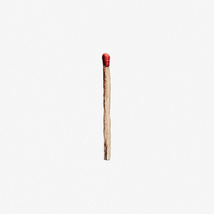
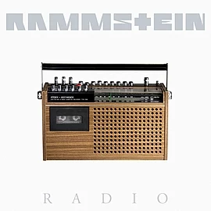
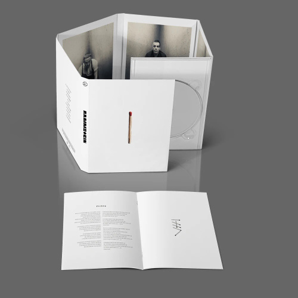
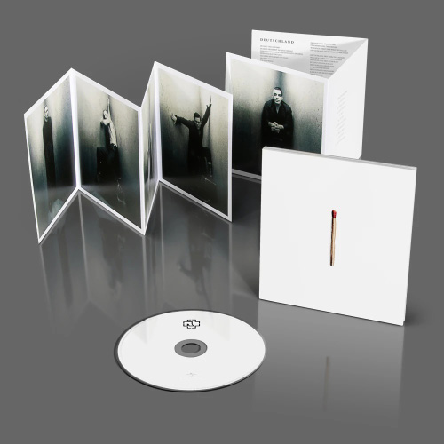
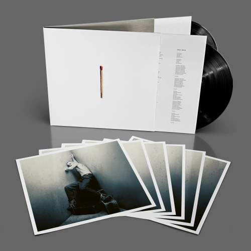
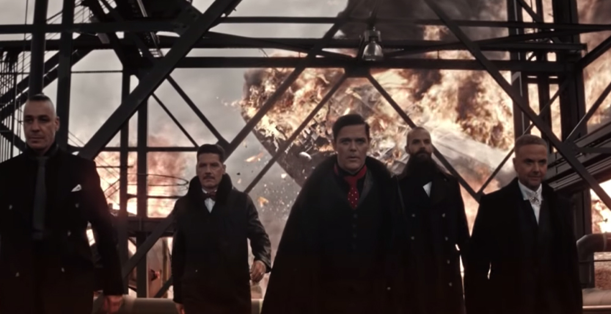
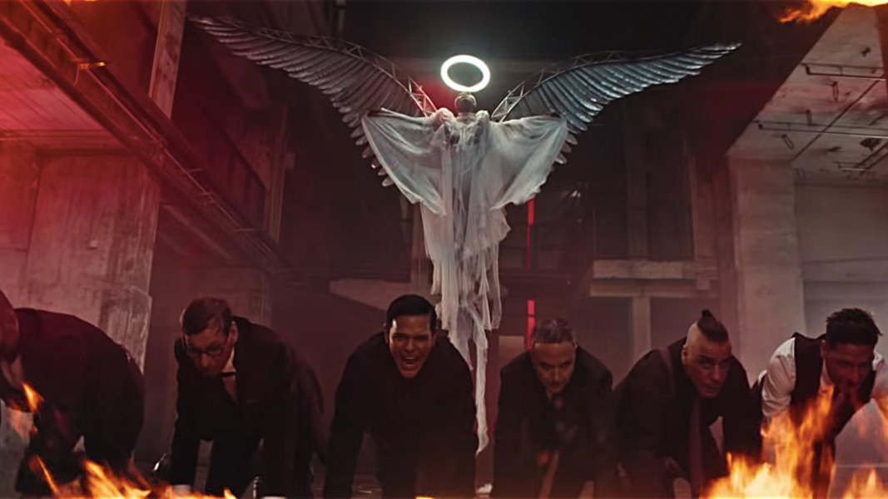
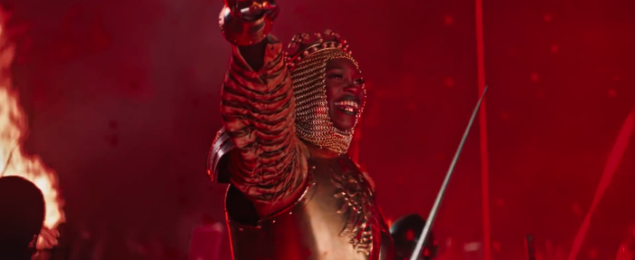
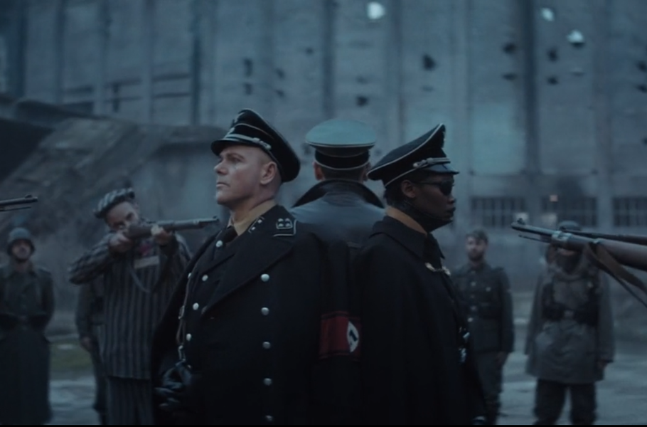

Последние новости группы Rammstein
- 17 мая 2019 г.
- Группа Rammstein 17 мая 2019 года выпустила новый альбом под оригинальным названием «Rammstein». Обложка изображена
в виде обычной спичики в белом фоне. Предыдущий студийный полноформатник группа выпустила 10 лет назад.
- 26 апреля 2019 г.
- 16-18 апреля 2019 г.
- DEUTSCHLAND 05:26
- RADIO 04:37
- ZEIG DICH 04:16
- AUSLÄNDER 03:52
- SEX 03:56
- PUPPE 04:33
- WAS ICH LIEBE 04:30
- DIAMANT 02:33
- WEIT WEG 04:19
- TATTOO 04:10
- HALLOMANN 04:09
- 26-28 мар. 2019 г.


- 26 апреля 2019 года на официальном канале группы
Rammstein на YouTube вышел музыкальный клип "RADIO", двадцать седьмой сингл немецкой
индастриал-метал группы Rammstein.Музыкальное видео выдержано в чёрно-белых тонах и стилистике
50-60-х годов. В нём нам представляют Германию в послевоенное время, когда она была разделена
на два государства — ФРГ и ГДР. В то время в клипе, показаны попытки цензурирования СМИ, в том
числе и радио. Группа исполняет песню, в то же время транслируя её по радио. В это время нам
показывают множество женщин, которые слушают радио и не хотят с ним расставаться — няньчат,
целуют и делают из него целый культ, с которым власть пытается бороться. Женщины протестуют
с плакатами с громкими лозунгами: «Ультракороткие волны для всех», «Моё радио принадлежит
мне». Далее они громят магазины и вступают в конфликт с полицией за радио — символ плюрализма
мнений. Одна из них отрезает мужчине ухо (отсылка к похожей сцене в фильме «Бешеные псы») и
начинает в него напевать слова песни. В следующих кадрах нам демонстрируют, как полиция собирается
разогнать группу, но у них ничего не получается, и они сами начинают танцевать. Попытки разогнать
музыкантов отображает борьбу со свободой самовыражения, свободой мысли. В конце клипа группа покидает
«Мессе Берлин». Их окружают флаги Евросоюза, окрашенные в непривычно красный цвет.
- На официальном канале
Rammstein на YouTube опубликованы отрывки песен «Deutschland», «Radio», «Zeig Dich», «Ausländer», «Sex»,
«Puppe», «WAS ICH LIEBE», «DIAMANT», «WEIT WEG», «TATTOO» и «HALLOMANN».
Еще 18 апреля был представлен Трек-лист нового альбома Rammstein (напомним, что новый альбом выйдет 17 мая 2019 года).
- Трек-лист:



- 26 марта 2019 года на официальном канале группы
Rammstein на YouTube вышел
35-секундный проморолик, в конце которого появляется дата 28 марта
2019 года и надпись «Deutschland». Спустя два дня вышел полноценный
музыкальный клип, в котором представлены различные события из истории
Германии, такие как войны римлян с германцами, Средневековье,
Наполеоновские войны, Вторая мировая война, Берлинская стена,
современность и будущее. В клипе присутствует сцена с заключённым
нацистских концлагерей, которые подвергаются смертной казни. Эта
сцена вызвала шквал критики со стороны немецких СМИ и еврейского сообщества.
Кадры из клипа



